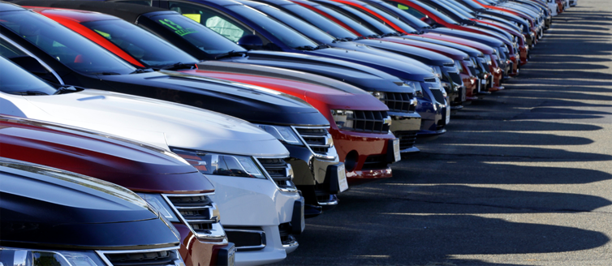

Sewa Mobil Lombok
Tentang Kami
Selamat Datang di Kota Lombok atau lebih dikenal dengan Pulau Seribu Masjid. Kota dengan wilayah administrasi yang relatif kecil namun di datangi banyak wisatawan baik lokal maupun mancanegara. Berbagai keperluan orang datang ke Lombok, bisa karena pekerjaan, tugas dinas, wisata dan lainnya. Ada banyak tempat populer yang selalu ramai dikunjungi wisatawan, baik itu sekedar nongkrong menikmati kenyamanan kota maupun untuk wisata kuliner.
Banyak makanan khas kota Lombok yang wajib anda coba selama di Lombok, Misalnya Nasi Balap, dan beberapa jajanan khas lainnya. Hal ini yang membuat kota Lombok selalu ramai dan tidak kalah dengan kota tetangga seperti Bali.
Selama di Lombok anda juga dimudahkan dengan beberapa tawaran transportasi, becak, delman, angkot, ojek dan taxi. Jika anda ingin lebih nyaman bisa dengan sewa mobil lombok. Lombok mempunyai banyak perusahaan rental mobil yang bisa anda pilih.
Kami merupakan perusahaan jasa Rental mobil Lombok, anda bisa memilih berbagai jenis kendaraan yang cocok dengan keinginan dan budget anda. Dengan harga sewa murah dan sangat kompetitif, kami mempunyai keyakinan anda tidak akan kecewa dengan pelayanan kami.
Persewaan Mobil Lombok Murah
Menikmati kota Lombok seperti kota anda sendiri dengan menggunakan mobi yang sesuai dengan keinginna anda. Lestari Rental menyediakan berbagai jenis mobil sewa dengan harga murah namun berkualitas. Tidak perlu membawa mobil pribadi dari kota asal anda, cukup dengan harga murah anda sudah bisa menikmati kota Lombok dengan mobil pribadi.
Bagi anda warga lombok sendiri yang belum mempunyai mobil pribadi, bisa sewa ditempat kami untuk keperluan yang mengharuskan memakai mobil dengan alasan agar semua keluarga bisa ikut bersama. Tidak perlu memikirkan angsuran tiap bulan, tidak perlu melakukan erawatan rutin, maupun pajak tahunan. Biyar kami yang mengurus mobil untuk kepertluan anda yang tidak setia hari membutuhkan mobil. Cukup dengan membayar uang sewa murah, sudah bisa menikmati mobil mewah.
Kami menyediakan paket sewa bulanan, mingguna dan harian bisa disesuaikan dengan kebutuhan anda. Jika selama satu bulan full membutuhkan mobil maka akan jauh lebih murah dengan sewa bulanan, dan sebaliknya jika hanya butuh satu hari saja, maka cukup bayar sewa satu hari dengan harga murah sudah bisa menikmati mobil untuk keperluan anda.
Kelebihan
Sewa Mobil Lombok Murah
Kami hadir dengan layanan maksimal, Profesional. Memberikan solusi transportasi bagi semua lapisan masyarakat. Harga sewa mobil ditempat kami relatif murah karena tidak mengambil margin laba terlalu tinggi, bisa dibandingkan dengan kompetitor kami.
Sewa mobil Lepas Kunci
Sewa Mobil Lombok Lepas Kunci / Tanpa Sopir / Driver / Self Driver Khusus Perusahaan dan Pelanggan Yang Sudah Verifikasi. Kami tidak melayani sewa tanpa driver dadakan.
Paket Wisata
Jadikan liburan anda berkesan dengan paket wisata yang kami tawarkan aneka macam pilihan destinasi menarik. Kami menyediakan paket wisata Lombok, dan sekitarnya.
Support
Layanan Pelanggan 24 Jam. Jam Buka kantor dan Pemesanan Mobil 06.00 - 22.00 WIB.
Sopir Pengalaman
Supir/driver yang menjemput anda hanyalah mereka yang berpengalaman dan profesional. Kami menerapkan standar prosedur operasional dimana setiap supir wajib memenuhi kenyamanan pelanggan mulai dari pakaian rapi, sopan, dan menguasai rute.
Mobil Lengkap
Saat ini kami menyediakan berbagai tipe kendaraan, mulai dari tipe City Car, MPV, Van, Pickup, dan Luxury Car. Dan kami berkomitmen untuk selalu menambah unit armada kami demi memenuhi kebutuhan pelanggan.
Mobil Terawat
Garansi mobil bagus, bersih, wangi. Kami selalu melakukan perawatan rutin dan penggantian sperpart secara berkala. Ketiak anda menggunakan mobil kami, maka sudah dipastikan siap dan layak jalan.
Sewa Mobil Keluar Kota
Melayani sewa mobil Lombok Plus driver keluar kota seperti Bali, dan kota yang lain.


Harga
Daftar Harga Rental Mobil Lombok Terbaru
Jenis mobil yang kami sewakan cukup lengkap, bisa memilih sesuai dengan kebutuhan diantaranya : Sewa Innova Lombok, Sewa Avanza Lombok, Sewa Grand Livina Lombok, Sewa Fortuner Lombok, Sewa Alphard Lombok, Sewa Hiace Lombok, Sewa Elf Lombok, Sewa Mobilio Lombok, Sewa Bus Lombok, dan Masih banyak pilihan.
Cukup dengan menghubungi kami, maka anda akan dijemput sesuai dengan lokasi. Tinggal duduk manis maka driver kita akan mengantar anda sesuai dengan tujuan dan keperluan. Dengan sewa mobil dan driver maka liburan anda di Lombok akan berkesan, tidak peru capek mengeluarkan tenaga untuk menahlukkan kemacetan jalan. Jangan buang waktu anda saat berwisata dengan sibuk tracking GPS mencari lokasi objek wisata, biyarkan driver kami yang mengantar anda karena mereka sudah hafal jalan dan lokasi semua objek wisata.
Harga sewa mobil dan driver di Lombok rata-rata 350k belum termasuk BBM bisa sewa selama 12 jam maupun sewa 24jam. Sewa mobil Lombok 12 jam merupakan jenis sewa paling minimal dari tempat kami sementara ini belum ada paket sewa mobil 6 jam. Sedangkan sewa mobil 24 jam misalnya mulai jam 9 pagi maka berakhir jam 9 pagi hari berikutnya.
Sewa Mobil Lombok Lepas Kunci
Sewa Mobil Lepas Kunci merupakan jasa rental mobil dimana penyewa hanya mendapatkan fasilitas mobil saja tanpa driver dan tanpa BBM. Sewa Mobil Self Driver banyak dimninati karena customer bisa nyetir sendiri tanpa ada tanggungan biaya operasional untuk sopir.
Kan tetapi sewa mobil di Lombok tanpa sopir juga mempunyai resiko tinggi, dimana jika terjadi kerusakan / insiden pada mobil maka penyewa bertanggung jawab secara penuh untuk memperbaiki dan ganti rugi.
Kami menyediakan mobil lepas kunci , diantaranya avanza, livina , xenia, mobilio, march, brio, yaris, jazz , ertiga. dengan kisaran harga 250k untuk sewa 12 jam dan bisa sewa mobil 24 jam.
Persyaratan sewa mobil tanpa sopir ini juga relatif mudah yaitu dengan ferivikasi data customer. Untuk mendapatkannya diperlukan waktu dan beberapa data terkait dengan calon penyewa, dan jika memungkinkan akan dilakukan survey lokasi dan lingkungan sekitar penyewa. Secara gampangnya jika anda pernah mengajukan pinkaman ke bak dan di ACC maka hal ini menjadi gambaran anda bisa mendapatkan fasilitas jasa sewa mobil tanpa sopir di tempat kami.
Sewa Mobil Plus Sopir di Lombok
Sewa mobil dengan sopir merupakan jenis penyewaan mobil dimana customer mendapatkan fasilitas mobil lengkapp dengan sopirnya. Di Lombok ada juga jenis sewa mobil All In dimana user mendapatkan fasilitass lengkap berupa mobil , driver, BBM, Parkir , Makan Sopir, Parkir dengan kata lain, anda tinggal duduk manis menikmati perjalanan.
Jenis sewa mobil plus sopir ini cocok bagi anda yang sibuk mengurusi kegiatan dalam event, pengantin, wisatawan luar kota yang belum hafal jalan, belum punya SIM A. Tapi disamping semua itu ada hal lain yang membuat anda akan perlu mencoba sewa mobil dengan driver yaitu anda akan merasakan lebih hight class karena serasa mempunyai sopir pribadi.
Rental Mobil Lombok Untuk Luar Kota
Kami juga melayani rental mobil lombok luar kota, yaitu sewa mobil di lombok di gunakan untuk keluar kota seperti Bali dan sekitar Untuk tujuan luar kota kami menyarankan anda sewa mobil plus driver demi kenyamanan dan keamanan bersama.
Hubungi Kami
Alamat Kantor : Jalan Energi Gang Anggrek No 45 Lingkungan Banjar Ampenan, Kota Mataram, Nusa Tenggara Barat. 83511 (Lombok Barat)
Telepon/WA : 0813-3977-7070
Email : pagitrans@gmail.com
.